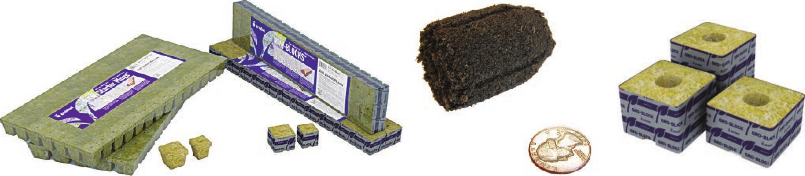

Hydroponic gardeners can select substrates that hold very little water to increase the oxygen available to the roots, but this requires frequent or continuous irrigation. Some gardeners prefer to reduce the number of irrigation cycles required by using a substrate that holds more water. A substrate that holds more water adds some safety from power outages, pump failures, and other potential sources of delays in irrigation. A plant grown in a very porous substrate like clay pellets may be damaged or die after a couple of hours of no irrigation when grown in a warm, sunny environment. That same plant grown in coco coir, a substrate that holds a lot more water, may be able to go a couple of days without irrigation. Usually the trade-off for this increase in safety is slightly slower growth. Substrates for Starting Seed This book focuses on stone wool and polymer bound plugs made from peat moss and coco coir. There are many other options for start substrates, but these are two of the most beginner-friendly options because they have a good water-holding capacity yet are difficult to overwater. Stone Wool Commonly called rock wool in the United States, stone wool is made by melting basaltic rocks and spinning the “rock lava” into fibers . . . similar to cotton candy but far less tasty. Disclaimer: Do not eat stone wool! Stone wool is one of the most popular hydroponic substrates in both commercial and hobby hydroponics. It has a nice balance of water retention and porosity, which makes it great for new hydroponic gardeners, who often tend to overwater plants. Some substrates are not very forgiving to overwatering, but stone wool in general will still function when overwatered— it might not have the best growth, but it usually won't kill the crop. Stone wool is available in blocks, slabs, and loose. Coconut Coir Also called “coco” coir, coconut coir is a growing substrate made from the husks of coconuts. It is a popular substrate for both conventional and organic hydroponic growers. If coco is not properly washed during processing it can have high levels of salt, which may damage salt-sensitive crops. It is a good practice to wash any coco before using in a hydroponic garden to remove any remaining salts and wash out any tannins that may stain the reservoir or growing area. Stone wool seedling sheets Polymer bound plug made of peat moss and coco coir fiber Stone wool blocks EQUIPMENT 25
